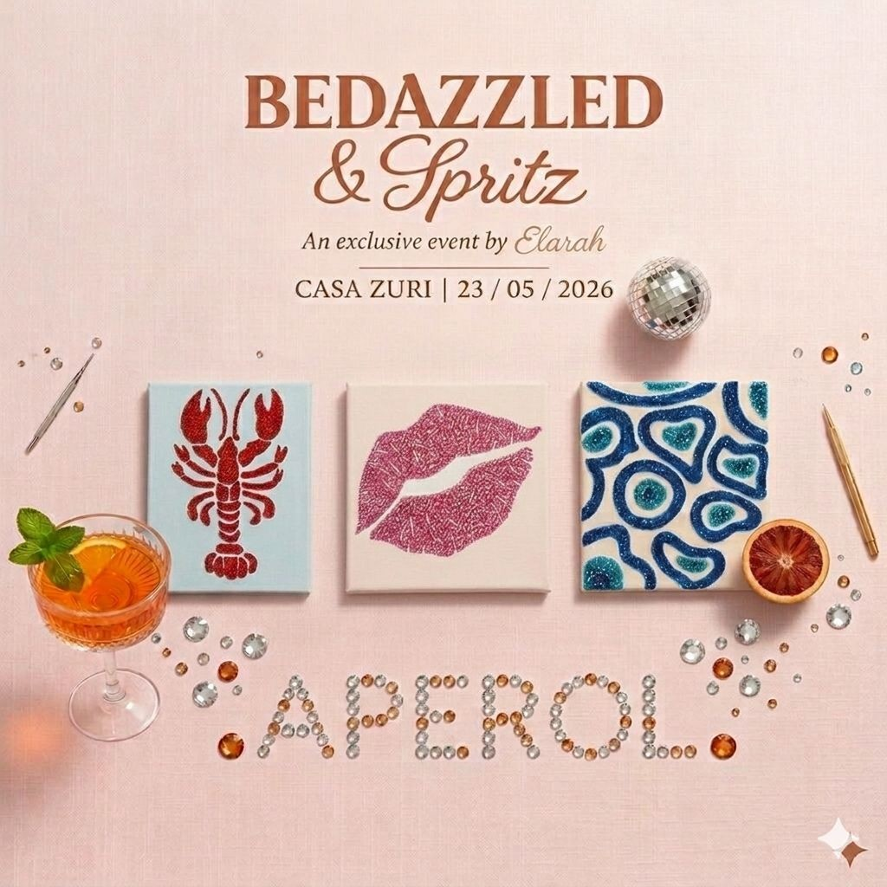
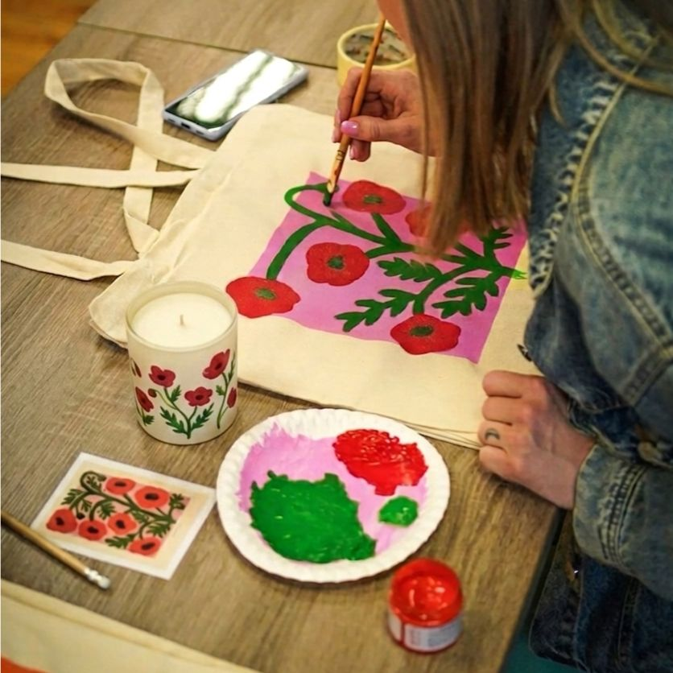
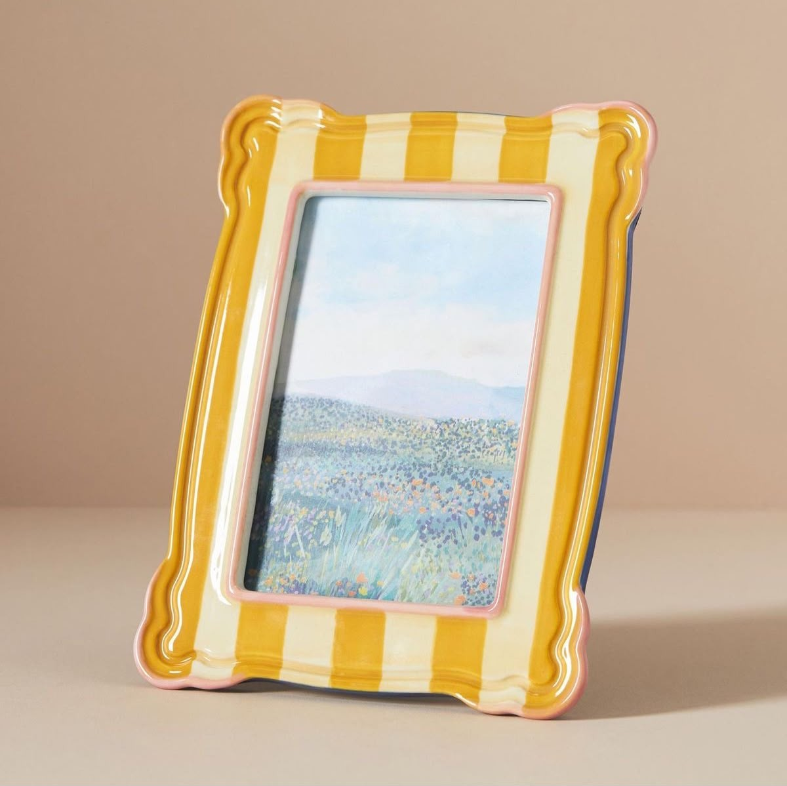

Blog › Aula de pintura em SP
Guia · Pintura em São PauloAula de pintura em SP: como é, quanto custa e onde fazer

Pintar virou um dos programas mais queridos de São Paulo — e por um bom motivo: é relaxante, não exige talento nenhum e, no fim, você leva pra casa algo feito por você. Se você está procurando aula de pintura em SP e quer saber como funciona, o que dá pra pintar e quanto custa, é só seguir abaixo.
Como é a aula
Uma aula avulsa dura em média 2 a 3 horas e é guiada por um artista do começo ao fim. Você não precisa saber desenhar: o instrutor mostra o passo a passo, te ajuda com as cores e as técnicas, e o clima é leve — geralmente com um drink na mão. É impossível "errar".

O que dá pra pintar
- Taça (pintura + spritz): o queridinho — pintar uma taça com um Aperol na mão. Rende foto e descontrai.
- Tela / quadro: a pintura clássica, pra levar pra parede de casa.
- Ecobag: pintar a própria bolsa — prática e original.
- Prato de cerâmica e porta-retrato: pra quem quer algo útil e decorativo.
Quanto custa uma aula de pintura em SP
As aulas começam em cerca de R$150 por pessoa, com todos os materiais (tintas, pincéis, suporte) inclusos e, em muitas, um drink na conta. O valor varia conforme o que você pinta e a duração. Em grupo, dá pra fechar formatos sob medida.
Pra quem é
- Sozinha(o). Um programa relaxante só seu — veja ideias de programa em SP sozinha.
- A dois. Pintar juntos é um date diferente leve e divertido.
- Em grupo. Aniversário, despedida ou amigas — veja atividades com amigas em SP.
Aulas de pintura na Elarah

Pintura + spritz
A experiência mais pedida: pintar com um drink na mão. Perfeita pra qualquer ocasião.
Ver experiência →
Todas as pinturas
Taça, tela, ecobag e mais — veja todas as aulas de pintura disponíveis e reserve.
Ver categoria →
Pintura em casa
Prefere em casa? A Elarah em Casa leva a experiência completa até você.
Ver Elarah em Casa →Perguntas sobre aula de pintura em SP
Preciso saber desenhar pra fazer uma aula de pintura?
Não. As aulas são pra iniciantes — o instrutor guia passo a passo e você sai com uma peça pronta, mesmo nunca tendo pintado antes.
O que dá pra pintar numa aula em SP?
Taça (pintura com spritz), tela/quadro, ecobag, prato de cerâmica e porta-retrato, entre outros. Você escolhe o que combina com a ocasião.
Quanto custa uma aula de pintura em SP?
As aulas começam em cerca de R$150 por pessoa, com materiais inclusos e, em muitas, um drink na conta. O valor varia conforme o que você pinta e a duração.
Bora pintar?
Conta se é pra você, a dois ou em grupo que a Elarah indica a aula de pintura ideal em SP.